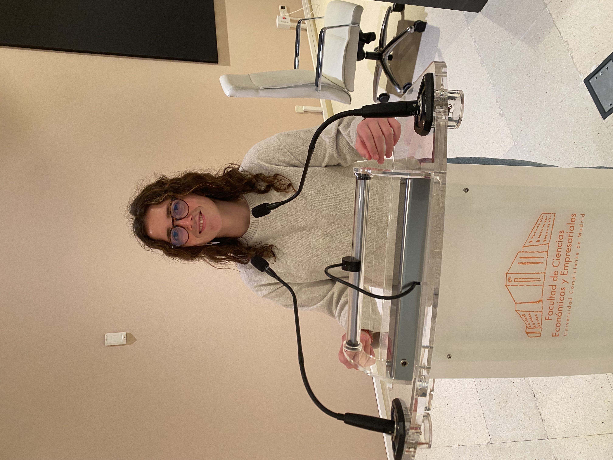

Nuestra visión
La visión detrás
de Método Kiru
Una metodología diseñada para acompañar autonomía, hábitos y crecimiento real.
Nuestra visión
Una metodología diseñada para acompañar autonomía, hábitos y crecimiento real.

Soy Sofía Muñoz, mentora académica y conductual.
Método Kiru nace de una idea simple: aprender también debería enseñar autonomía, equilibrio y responsabilidad.
Tras más de cinco años de experiencia en educación, trabajando en Estados Unidos, en actividades extraescolares de robótica, clases particulares y acompañando ya a alumnos dentro de Método Kiru, entendí que muchos niños no necesitan solo estudiar más, sino aprender de otra manera.
01
Sistemas adaptados para construir constancia, organización y motivación real.
02
Cada alumno desarrolla un proyecto diseñado para fortalecer liderazgo, autonomía y responsabilidad.
03
Una guía práctica para acompañar el proceso también desde casa.
04
Reuniones semanales y acompañamiento continuo durante todo el proceso educativo.
“Educar también es enseñar a sostenerse.”